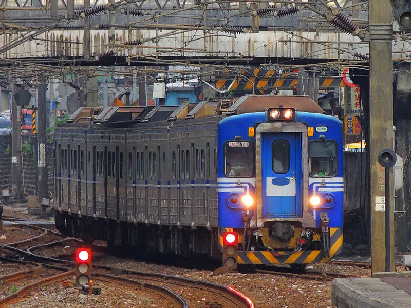
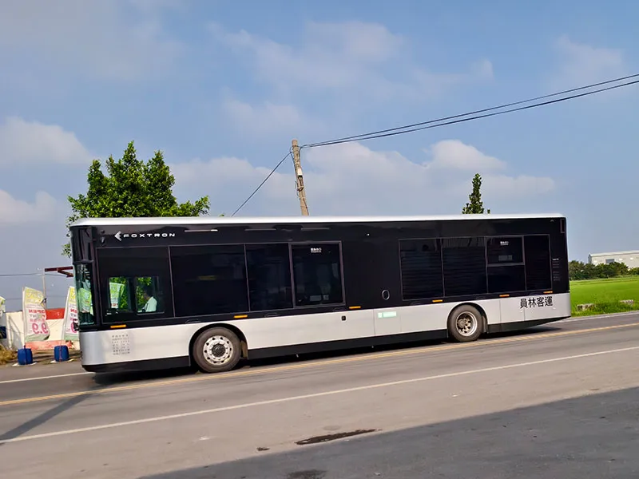

directions_bus台鐵高鐵
國營台灣鐵路股份有限公司
台鐵彰化地區的車站有：彰化站、花壇站、大村站、員林站、永靖站、社頭站、田中站、二水站、源泉站（集集線）等。
臺灣高鐵彰化站
臺灣高鐵彰化站，位於彰化縣田中鎮，是本縣重要的交通樞紐，西接國道1號高速公路，緊鄰台鐵田中車站。此車站於2015年完工啟用，已為南彰化地區的居民，以及前來彰化旅遊的遊客，提供了更為便捷的交通服務。

directions_bus客運
- 彰化即時公車動態
- 國光客運
- 統聯客運
- 員林客運
- 彰化客運
https://chbus.chcg.gov.tw/driving-map
http://www.kingbus.com.tw/
彰化站:彰化縣彰化市中正路1段531號
員林轉運站:彰化縣員林市靜修路52號之1
https://www.ubus.com.tw/
彰化站:彰化縣彰化市三民路8號
員林轉運站:彰化縣員林市靜修路52-1號
(第七月臺)
http://www.ylbus.com.tw/about-us.html
溪湖站（04）885-2055
二林站（04）896-0040
員林站（04）832-0320
彰化站（04）722-3153
https://www.changhuabus.com.tw/
總公司地址:彰化市建國南路177號

account_balance遊客服務中心
- 彰化火車站旅遊服務中心
- 員林火車站旅遊服務中心
- 田尾公路花園遊客服務中心
- 彰化縣旅遊服務中心
- 八卦山大佛風景區遊客中心
電話:(04)728-5750
地址:彰化縣彰化市三民路1號
電話:(04)836-1762
地址:彰化縣員林市民權街55號
電話:(04)883-6882
地址:彰化縣田尾鄉打簾村民族路一段156號
電話:(04)778-7753
地址:彰化縣鹿港鎮復興路506號
電話:(04)753-2755
地址:彰化縣彰化市卦山路8-1號